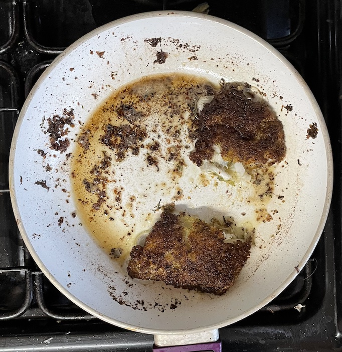

Cod
Notes
- Hard to overcook cod because is oily fish
- Do not velvet
Recipes
Steamed
Roasted
- Bake at 160°C for 12 mins
Poached
- Add milk to saucepan and warm till just bubbling
- Add cod and heat till cooked, 6-8 mins
Pan-fried
- Can add ½ tsp turmeric to oil
- Start on low-medium heat
- Heat fillets for 5 mins in oiled frying pan without lifting (flip before cooked through so fish does not
flake or break apart)
- Turn over and add butter
- Baste the fillets in melted butter till cooked
Serving
Pan-fried with lime and herb crust
- Press firmly fish on both sides to coat with
- 3 tbsp breadcrumbs
- 2 tbsp dill / parsely chopped
- zest 1 lime
- Melt 30g butter in pan
- Add 1 tbsp olive oil
- When bubbles appear around pan add fish and cook for 5-6 mins
- When crumbs are golden turn and cook other side

Cod chunks
- Cut into chunks while still frozen
- Coat in cornflour and fry in oil
- Good for stir fries